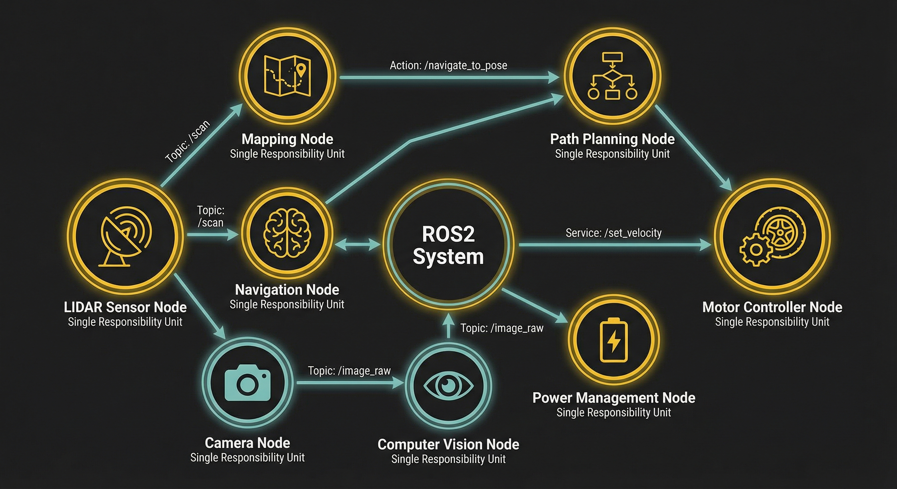

什么是ROS2节点
节点是ROS2中独立运行的可执行程序，是系统的最小功能单元。每个节点负责特定任务，通过话题、服务与其他节点通信。
单一职责原则
一个节点只做一件事。如摄像头节点只负责采集图像，图像处理节点只负责分析，两者通过Topic通信。
节点 vs 进程
节点是逻辑单元，一个进程可以包含多个节点。节点概念让ROS2比传统进程间通信更灵活、更解耦。
匿名发布机制
发布者无需知道订阅者存在，实现真正的解耦。发布者只管发布数据，订阅者自行决定是否接收处理。
节点命名规范
/namespace/node_name
例: /drone1/sensors/camera
支持命名空间隔离和多节点实例